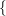
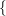
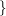
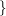

| Up | Next | Prev | PrevTail | Tail |
Authors: Andreas Dolzmann, Thomas Sturm, and Winfried Neun
Consider the ideal basis F = {ax,x + y}. Treating a as a parameter, the calling sequence
yields {x,y} as reduced Gröbner basis. This is, however, not correct under the specialization a = 0. The reduced Gröbner basis would then be {x + y}. Taking these results together, we obtain C = {x + y,ax,ay}, which is correct wrt. all specializations for a including zero specializations. We call this set C a comprehensive Gröbner basis (CGB).
The notion of a CGB and a corresponding algorithm has been introduced bei Weispfenning [?]. This algorithm works by performing case distinctions wrt. parametric coefficient polynomials in order to find out what the head monomials are under all possible specializations. It does thus not only determine a CGB, but even classifies the contained polynomials wrt. the specializations they are relevant for. If we keep the Gröbner bases for all cases separate and associate information on the respective specializations with them, we obtain a Gröbner system. For our example, the Gröbner system is the following;
The CGB package provides functions for computing both CGB’s and Gröbner systems, and for turning Gröbner systems into CGB’s.
For managing the conditions occurring with the CGB computations, the CGB package uses the package REDLOG implementing first-order formulas, [?, ?], which is also part of the REDUCE distribution.
The CGB package uses the settings made with the function torder of the GROEBNER package. This includes in particular the choice of the main variables. All variables not mentioned in the variable list argument of torder are parameters. The only term ordering modes recognized by CGB are lex and revgradlex.
The function cgb expects a list F of expressions. It returns a CGB of F wrt. the current torder setting.
Note that the basis returned by the cgb call has not undergone the standard evaluation process: The returned polynomials are ordered wrt. the chosen term order. Reevaluation changes this as can be seen with the output of ws.
The function gsys follows the same calling conventions as cgb. It returns the complete Gröbner system represented as a nested list
 c1,{g11,…,g1n1}
c1,{g11,…,g1n1} ,…,
,…, cm,{gm1,…,g1nm}
cm,{gm1,…,g1nm} .
.
The ci are conditions in the parameters represented as quantifier-free REDLOG formulas. Each choice of parameters will obey at least one of the ci. Whenever a choice of parameters obeys some ci, the corresponding {gi1,…,gini} is a Gröbner basis for this choice.
As with the function cgb, the contained polynomials remain unevaluated.
Computing a Gröbner system is not harder than computing a CGB. In fact, cgb also computes a Gröbner system and then turns it into a CGB.
If the switch cgbgen is turned on, both gsys and cgb will assume all parametric coefficients to be non-zero ignoring the other cases. For cgb this means that the result equals—up to auto-reduction—that of groebner. A call to gsys will return this result as a single case including the assumptions made during the computation:
The call gsys2cgb turns a given Gröbner system into a CGB by constructing the union of the Gröbner bases of the single cases.
All computations considered so far have taken place over the complex numbers, more precisely, over algebraically closed fields. Over the real numbers, certain branches of the CGB computation can become inconsitent though they are not inconsistent over the complex numbers. Consider, e.g., a condition a2 + 1 = 0.
When turning on the switch cgbreal, all simplifications of conditions are performed over the real numbers. The methods used for this are described in [?].
[DS97a] Andreas Dolzmann and Thomas Sturm. Redlog: Computer algebra meets computer logic. ACM SIGSAM Bulletin, 31(2):2–9, June 1997.
[DS97b] Andreas Dolzmann and Thomas Sturm. Simplification of quantifier-free formulae over ordered fields. Journal of Symbolic Computation, 24(2):209–231, August 1997.
[DS99] Andreas Dolzmann and Thomas Sturm. Redlog User Manual. FMI, Universität Passau, D-94030 Passau, Germany, April 1999. Edition 2.0 for Version 2.0.
[Wei92] Volker Weispfenning. Comprehensive Gröbner bases. Journal of Symbolic Computation, 14:1–29, July 1992.
| Up | Next | Prev | PrevTail | Front |